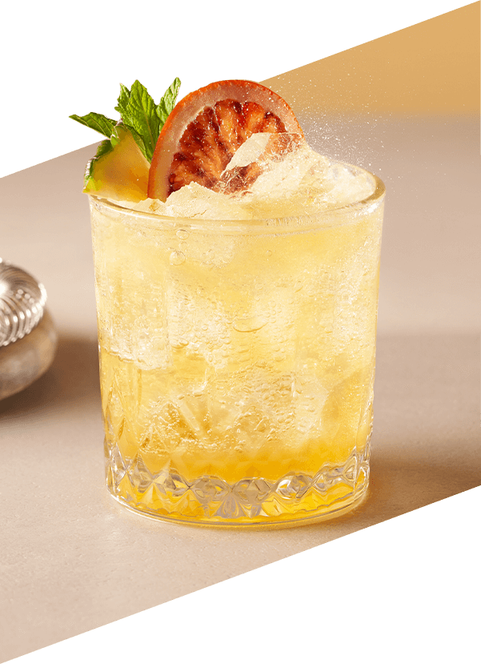
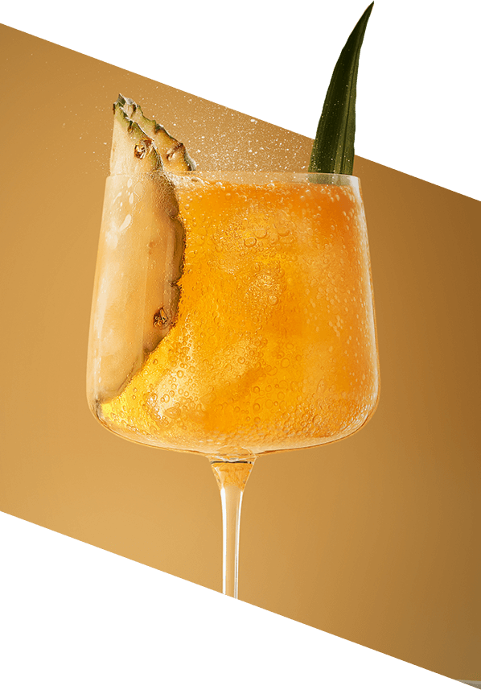
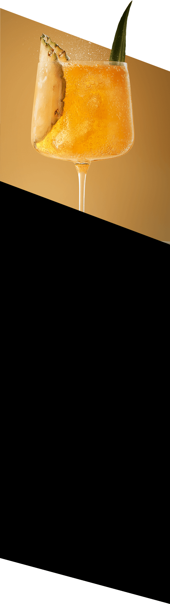

Ananas & Jalapeño
Unikalne połączenie smaków tropikalnego
ananasa
i ognistego jalapeño, które rozpali wszystkie zmysły
Odkryj niezwykłą bazę do koktajli i moktajli, która harmonijnie łączy słodycz dojrzałego ananasa z wyrazistą ostrością jalapeño. Ten nietuzinkowy syrop to idealny dodatek do tworzenia oryginalnych napojów, które pobudzą Twoje zmysły i dodadzą każdej chwili wyjątkowej głębi smaku.
Perfekcyjne
koktajle i moktajle
na 1, 2, tssst!
Poznaj nową kolekcję bezalkoholowych baz do koktajli i moktajli SodaStream Crafted! Dzięki niepowtarzalnym smakom i oryginalnym kompozycjom, każda chwila zyska wyjątkowy charakter. Dodaj gazowaną wodę przygotowaną za pomocą saturatora SodaStream, aby bez wysiłku stworzyć zachwycające napoje w domowym zaciszu.
Orzeźwiające
w dzień
wyrafinowane
nocą!

Z SodaStream Crafted
każda chwila staje się
pełna
smaku!
W ciągu dnia delektuj się orzeźwiającymi moktajlami, które umilą Ci każdą chwilę i będą idealnym dodatkiem do spotkań z bliskimi. Gdy zapada zmrok, stwórz wyjątkową atmosferę z wyrafinowanymi koktajlami, które podkreślą charakter każdej okazji - od romantycznej kolacji po wieczór w gronie przyjaciół.
Bąbelkowa rewolucja w Twoim domu!

gazuj
miksuj
smakuj
Stwórz idealnie musującą wodę i pyszne napoje, dopasowane do Twojego gustu.
Kontroluj poziom bąbelków i słodyczy, eksperymentuj ze smakami i ciesz się świeżością w każdej chwili.
Day
Moktajl:
Tropical
Pineapple Fizz
Składniki:
- 35 ml bazy SodaStream Crafted Ananas & Jalapeño
- 35 ml musu ananasowego
- 20 ml soku z limonki
- 45 ml wody gazowanej SodaStream
- Kostki lodu
Dekoracja:
Kawałek ananasa, plaster czerwonejpomarańczy
Przygotowanie:
- Do shakera wsyp kostki lodu. Wlej mus ananasowy, sok z limonki i bazę SodaStream.
- Zamknij shaker i mocno wstrząsaj przez 15-20 sekund.
- Napełnij szklankę kostkami lodu. Przelej zawartość shakera przez sitko barmańskie.
- Uzupełnij szklankę wodą gazowaną, delikatnie mieszając napój.
- Ozdób kawałkiem ananasa i plasterkiem suszonej pomarańczy.
Night
 Koktajl:
Jalapeño
Piña Loco
Składniki:
- 35 ml bazy SodaStream Crafted Ananas & Jalapeño
- 70 ml likieru kokosowego na bazie rumu
- 10 ml musu ananasowego
- 55 ml wody gazowanej SodaStream
- Kostki lodu
Dekoracja:
Plaster i liść ananasaPrzygotowanie:
- Shaker wypełnij do połowy kostkami lodu. Wlej likier kokosowy, mus ananasowy i bazę SodaStream.
- Zamknij shaker i energicznie wstrząsaj przez 15-20 sekund.
- Napełnij kieliszek kostkami lodu. Przelej wymieszane składniki przez sitko barmańskie.
- Dopełnij kieliszek wodą gazowaną i delikatnie zamieszaj koktajl.
- Ozdób plasterkiem i liściem ananasa.
bąbelki z charakterem!
Smaki, które rozbudzą Twoje zmysły
Zapomnij o nudnych napojach! Bazy SodaStream Crafted to prawdziwa
eksplozja smaków - słodkie, kwaśne i wytrawne nuty łączą się w
wysublimowane kompozycje, które zaskoczą nawet najbardziej
wymagające podniebienia. Stwórz modne drinki i orzeźwiające
lemoniady, które przeniosą Cię prosto do najlepszych barów świata -
bez wychodzenia z domu!

Barmanem możesz zostać Ty
Nie potrzebujesz specjalnych umiejętności ani sprzętu, aby
przygotować perfekcyjne napoje. Wystarczy dodać wodę gazowaną do
bazy SodaStream Crafted, a potem... magia! Jeśli masz ochotę na coś
bardziej wyrafinowanego, dodaj ulubiony alkohol i ciesz się
wyjątkowym koktajlem!
Więcej bąbelków, mniej wydatków
Jedna butelka bazy SodaStream to aż 20 porcji pyszności!
Oszczędzasz pieniądze i miejsce w lodówce, a zyskujesz więcej
czasu na delektowanie się wyjątkowymi smakami z bliskimi.
Gotowy na bąbelkową przygodę?
Zalecane proporcje
Moktajl:
1 część bazy + 10 części wody gazowanej.
Koktajl:
1 część bazy + 10 części wody gazowanej + 2 części alkoholu.
Twórz, mieszaj,
zaskakuj!
Twój domowy bar
miejsce, gdzie rodzą się wyjątkowe smaki
Odkryj w sobie pasję miksologa i zamień swoją kuchnię w tętniące życiem laboratorium smaków! Z SodaStream Crafted tworzenie orzeźwiających moktajli w ciągu dnia i wyrafinowanych koktajli wieczorową porą stanie się Twoją nową, ekscytującą przygodą. Bąbelkuj z pasją, a każdy napój stanie się małym dziełem sztuki!
Jedna SodaStream – wiele możliwości
Odkryj bogactwo smaków z syropami SodaStream! Czarny Bez, Marakuja,
Lemoniada - to tylko początek Twojej przygody. Stwórz dowolny napój,
kiedy tylko masz na to ochotę, bez wychodzenia z domu. Klasyczne
Pepsi, Mirinda, Cola? A może owocowe orzeźwienie bez cukru? Z
SodaStream wszystko jest możliwe.

Twoje bąbelki, Twój smak, Twoja chwila.